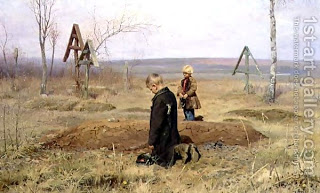

Bava Batra 33 - Chazakah, Case Law #4 - Rumor Breaks Chazakah

A rumor emerged involving Rava Bar Sharshum that he was using land that belonged to orphans. Abaye said to him, "Tell me, what are the circumstances?"
Rava explained, "I was holding their father's land as security for loan repayment and collecting the harvest. When the loan was thus completely paid, I still kept the land, because their father owed me another loan."
"Had I returned the land, I would be able to collect the second loan only with an oath, and it is proper to avoid even truthful oaths . You should believe me on the strength of the 'Why would he lie?' argument, for I could have said a better lie, that I bought that land."
Abaye ruled, "The rumor functions as protest and ruins your chazakah, the three years of which count only without protests. Therefore, return the land."